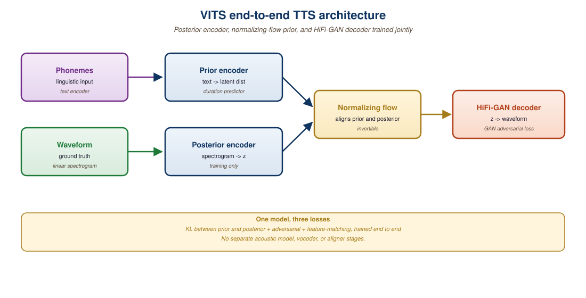

"A voice is a fingerprint with a heartbeat. Neural TTS in 2026 prints that fingerprint from a five-second sample and forges the heartbeat to match."
Author's notebook, after the F5-TTS, Cartesia Sonic, and ElevenLabs v3 launches of late 2024
Text-to-speech (TTS) has crossed the uncanny valley. The pipeline of 2018 (text -> phonemes -> spectrogram -> vocoder, four separate models) has collapsed into single end-to-end systems that map characters or tokens directly to waveform-quality audio. Three lineages dominate: VITS-style conditional VAEs with adversarial training, codec language models (Bark, VALL-E, Tortoise) that treat audio as a sequence of discrete tokens, and flow-matching models (F5-TTS, Voicebox) that denoise mel-spectrograms in the same way image diffusion models denoise pixels. All three families share one architectural lesson from the rest of this book: stack transformer blocks on top of a learned audio representation, and the same recipe that produces ChatGPT produces Cartesia Sonic. This section is the foundation for everything that follows in Chapter 20: cloning (Section 20.2), music (Section 20.3), editing (Section 20.4), and ASR (Section 20.5).
1. From Tacotron to End-to-End Neural TTS
Modern TTS has three jobs: convert text into a phonetic plan, predict an acoustic feature sequence (typically a mel-spectrogram or a stream of audio codec tokens), and turn that feature sequence into a waveform. Before 2021, each job was a separate neural network. Tacotron 2 (Shen et al., 2018) handled text-to-spectrogram with an attention-based seq2seq, and a WaveNet or HiFi-GAN vocoder turned the spectrogram into 16-bit PCM samples at 22 or 24 kHz. The cracks in this pipeline showed at the seams: training data mismatch between modules, exposure bias when the spectrogram predictor saw its own outputs at inference, and a long tail of failure modes where the attention would skip or repeat words.
The end-to-end shift fused these stages. VITS (Kim et al., 2021) trained the text encoder, the duration predictor, the latent z-sequence, and a HiFi-GAN-style decoder jointly using a variational lower bound plus an adversarial loss. The model never explicitly emits a spectrogram at inference; the latent z passes straight into the GAN-trained decoder, and you read waveform out the other end. This eliminated the mismatch problem and pushed the mean opinion score (MOS) within 0.1 of natural recordings on LJSpeech.
In Section 22.1 a tokenizer maps text into discrete IDs that a transformer can consume. The 2023-2024 generation of TTS uses the same idea for audio: a neural codec (EnCodec, SoundStream, Mimi, DAC) compresses 24 kHz audio into 50 to 75 discrete tokens per second across 4 to 32 residual codebooks, and a transformer language model is trained to predict the next codec token given text. Bark, VALL-E, and Tortoise are all instances of this recipe; their differences are which codec, how many codebooks they autoregress, and how much data they trained on. Once you internalize that audio is just another vocabulary, every trick you know about LLM training (KV caching, FlashAttention, RoPE) transfers wholesale.
2. VITS: The Flow-Based End-to-End Baseline
VITS (Variational Inference with adversarial learning for end-to-end Text-to-Speech) is the architectural ancestor of most open-source neural TTS in 2026. It treats speech generation as a conditional VAE problem with three core modules: a text encoder that produces a sequence of phoneme-level latents, a stochastic duration predictor that decides how long each phoneme should last, and a flow-based posterior that maps the latent z to a waveform through a HiFi-GAN decoder. The clever piece is the monotonic alignment search (MAS): a non-differentiable dynamic-programming routine inside the training loop that finds the best phoneme-to-frame alignment, eliminating the need for an external aligner like Montreal Forced Aligner.
The training objective combines a reconstruction loss on the waveform (mel-spectrogram L1 plus multi-period and multi-scale discriminators), a KL divergence between the prior and the posterior over z, and a duration loss over the phoneme-level durations. The result is a single network that takes characters or phonemes in and produces 24 kHz audio out, trainable on a single GPU in a few days on a dataset like LJSpeech.

3. Bark and Codec Language Models
Suno AI's Bark (released April 2023) sits in a different lineage. Instead of a VAE plus flow, it is a stack of transformer decoders that autoregress over audio codec tokens. Bark uses EnCodec at 24 kHz with 8 residual codebooks, producing 75 tokens per second per book, or 600 tokens per second of audio total. The model decomposes this into three stages: a semantic transformer that predicts a coarse stream of semantic tokens (derived from a quantized HuBERT-like model), a coarse-acoustic transformer that predicts the first two EnCodec codebooks conditioned on the semantic stream, and a fine-acoustic transformer that fills in codebooks 3 through 8 conditioned on the first two. The fine model is non-autoregressive across codebooks but autoregressive across time.
This staged decomposition matters because audio is exquisitely high-dimensional. A naive flat autoregression over 600 tokens per second of 24 kHz speech would consume the entire context window of GPT-4 in 13 seconds of audio. Splitting semantics from acoustics, and coarse from fine, lets each stage operate at a manageable rate.
The Bark recipe (or a close cousin) ships behind several popular voice products. ElevenLabs v3 (2024) is a closed-weights codec LM with proprietary improvements in expressivity and pacing. Cartesia Sonic (2024-2025) replaces the transformer backbone with a state-space model (Mamba-2 derivative) to achieve sub-100 ms time-to-first-byte on streaming TTS. PlayHT 2.0 ships a multilingual codec LM with voice cloning. Open-source Bark itself remains the cheapest way to prototype any codec-LM-based product without negotiating API keys.
4. F5-TTS: Flow Matching Meets TTS
F5-TTS (Chen et al., 2024, arXiv:2410.06885) is the 2024 state of the art in zero-shot open-weight TTS. It abandons both VAE and codec-LM lineages in favor of a flow-matching transformer that denoises mel-spectrograms conditioned on text. The "F5" stands for "Faster, Flow-matching, with infilling and pretraining for Five-shot-or-better synthesis." It is a 333M-parameter DiT (Diffusion Transformer; see Section 33.1 for the video DiT variant) trained on 100k hours of multilingual speech.
The architectural simplification is striking. F5-TTS has no phoneme tokenizer, no duration predictor, no alignment search, and no vocoder beyond an off-the-shelf BigVGAN. Text is byte-level. Audio conditioning at inference (the reference voice clip) is concatenated with masked target frames, and the DiT learns to fill in the missing mel frames given the text. Inference is 16 to 32 flow-matching steps, similar in cost to Stable Diffusion 3 at the same parameter count. The model handles zero-shot voice cloning from a 5-second prompt out of the box, code-switches between languages, and runs at roughly 0.15 real-time factor on a single A100.
# Synthesizing speech with Bark (Suno-AI's open-source codec LM)
# pip install bark
from bark import SAMPLE_RATE, generate_audio, preload_models
from scipy.io.wavfile import write as write_wav
# Download and cache the three transformer stages (semantic, coarse, fine).
# First call pulls ~5 GB; subsequent calls are local.
preload_models()
# Bark supports inline tags: [laughs], [sighs], [music], (whispering),
# as well as multilingual text and a small set of curated "history prompts".
prompt = (
"Hello, my name is Suno. And, uh, I like pizza. [laughs] "
"But I also like other things, like reading books and watching films."
)
audio_array = generate_audio(prompt, history_prompt="v2/en_speaker_6")
write_wav("bark_output.wav", SAMPLE_RATE, audio_array)
print(f"Generated {len(audio_array) / SAMPLE_RATE:.1f} seconds at {SAMPLE_RATE} Hz")bark library. The history_prompt selects from Suno's curated voice library; pass None to sample a random voice instead. Bark is unique among open TTS in supporting nonverbal sounds ([laughs], [sighs]) directly in the prompt because its semantic transformer was trained on transcripts that include them.5. Prosody, Multi-Speaker, and Emotion Control
Naturalness is no longer the bottleneck; expressivity is. The 2024-2026 generation of TTS competes on prosody (pitch contour, stress, pacing), emotion (calm, angry, sad, excited), and speaker fidelity in multi-speaker contexts. There are four main control mechanisms in production.
The first is speaker embeddings, where a separate speaker-verification network (a wav2vec-XLSR or a similar self-supervised model) produces a 256-to-512-dimensional vector that conditions the TTS decoder. This is how VITS-2 and YourTTS extend single-speaker models to multi-speaker zero-shot synthesis. The second is reference-prompt conditioning, where a clip of target audio is concatenated with the input mel and the model learns to copy the style; F5-TTS, VALL-E, and NaturalSpeech 3 all use this trick. The third is natural-language style prompts: PromptTTS and Audiobox accept text like "an angry old man speaking quickly with a slight British accent" alongside the content text. The fourth is fine-grained controls exposed at inference: ElevenLabs v3 ships an "emotion" slider and a "stability" slider that act as classifier-free guidance weights on internal style channels.
The most common TTS production bug is treating the emotion slider as if it composes with itself. Setting "stability=0.1, similarity=0.9" gives a different output distribution than "stability=0.9, similarity=0.1", but neither is necessarily what a director means by "more angry, less crisp." Always A/B at least three random seeds per slider configuration when shipping a new voice; the variance across seeds at fixed sliders is often larger than the effect of moving a slider by a quarter.
6. The 2026 TTS Landscape: Open vs. Commercial
The commercial-open gap on raw audio quality is narrower than on most other modalities, but production reliability still favors the API vendors. Figure 32.1.2 summarizes the field as of late 2025.
| Model | Year | License | Zero-Shot Clone | Languages | Streaming Latency |
|---|---|---|---|---|---|
| F5-TTS | 2024 | CC-BY-NC 4.0 (weights) | 5 s reference | Multilingual (Emilia) | Batch only |
| Bark | 2023 | MIT | Limited (preset voices) | 13 languages | ~3 s (offline) |
| VITS-2 / XTTS-v2 | 2023 | CPML (XTTS) | 6 s reference | 16 languages | ~500 ms |
| ElevenLabs v3 | 2024 | Closed API | 30 s pro clone | 32 languages | ~250 ms first byte |
| Cartesia Sonic | 2024 | Closed API | 3 s reference | 15 languages | ~75 ms first byte |
| PlayHT 3.0 | 2025 | Closed API | 10 s reference | 40 languages | ~200 ms first byte |
| OpenAI tts-1-hd | 2024 | Closed API | No (6 preset voices) | Multilingual | ~400 ms first byte |
# Comparison: F5-TTS zero-shot synthesis (open weights, mel + flow matching)
# pip install f5-tts
from f5_tts.api import F5TTS
f5 = F5TTS(
model_type="F5-TTS", # or "E2-TTS" for the smaller variant
vocoder_name="vocos", # 24 kHz, BigVGAN also supported
)
# Reference clip + its transcript anchor the voice and prosody.
# Five seconds of clean speech is enough; longer hurts more than it helps.
ref_audio = "alice_5sec.wav"
ref_text = "Hello, this is Alice and I am testing the synthesis system."
target_text = (
"The flow matching denoiser inside F5-TTS predicts the velocity "
"of the mel-spectrogram, not the spectrogram directly."
)
wav, sr, _ = f5.infer(
ref_audio=ref_audio,
ref_text=ref_text,
gen_text=target_text,
nfe_step=32, # number of flow-matching steps
cfg_strength=2.0, # classifier-free guidance scale
speed=1.0,
)
import soundfile as sf
sf.write("f5_output.wav", wav, sr)
print(f"Generated {len(wav) / sr:.1f}s at sr={sr}")nfe_step trades quality for latency in the same way num_inference_steps does in Stable Diffusion. The model handles cross-lingual transfer if gen_text is in a different language than ref_text.7. Prosody from an LLM: The Emerging Pattern
A 2025 architectural trend that will dominate 2026 is using an LLM to generate the prosody plan and only delegating the acoustics to the TTS model. The pipeline looks like: (1) GPT-4o or Claude takes the text and an instruction ("read this as if you are calming a child after a nightmare"), and emits the same text annotated with SSML-like tags for pacing, emphasis, and emotion shifts; (2) a smaller TTS model (Cartesia or F5-TTS) executes that prosody plan. The factorization is appealing because the LLM already knows narrative pacing, sarcasm, and dialogue structure from its pretraining corpus, while the acoustic model has a much narrower job. Audiobox (Meta, 2023) and Voicebox (Meta, 2023) prototyped this with end-to-end joint training, but the production pattern of the API era is to keep the LLM and the TTS as separate services and rely on a structured intermediate representation between them.
F5-TTS at int8 quantization fits in 333 MB of weights and runs on a M2 MacBook. The same architecture that requires a data center to serve at ElevenLabs scale (50k concurrent streams, sub-100 ms TTFB) is, at the model-weights level, smaller than a single Premiere Pro render. The constraint is throughput, not capability.
Three TTS lineages cover the field: VITS-style VAE-flow for tight end-to-end training on bounded data, codec language models like Bark for prompt-driven expressivity at the cost of latency, and flow-matching DiTs like F5-TTS for zero-shot cloning with simple architectures. Commercial APIs (ElevenLabs, Cartesia, PlayHT) wrap one of these recipes behind sub-second TTFB streaming, multilingual coverage, and SLAs that open weights cannot match. The acoustic gap is small; the production gap is real.
- Bark autoregresses over EnCodec tokens at 75 tokens per second per codebook with 8 codebooks. How many tokens does Bark generate per minute of audio, and what does that imply for the context window of the coarse-acoustic transformer if you want to generate 30-second clips in a single forward pass?
- F5-TTS uses flow matching instead of variational inference. Sketch why flow matching avoids the posterior-collapse and KL-balancing problems that plague conditional VAE TTS, and connect this to the rectified flow discussion in Section 31.1.
- Why does the LLM-prosody-planner-plus-small-TTS factorization in Section 7 work better in production than a single large end-to-end model, even though end-to-end models theoretically reach a lower joint loss?
What Comes Next
Section 20.2 takes the zero-shot cloning capability of F5-TTS and asks the harder question: when is cloning a person's voice a consent violation, and how do we build pipelines that respect that boundary while still letting users dub their own audiobooks? After that, Section 20.3 pivots from speech to music: the same codec-LM and flow-matching ideas that produce ElevenLabs and F5-TTS also produce Suno and Udio.
Further Reading
- Kim, J., Kong, J., & Son, J. (2021). Conditional Variational Autoencoder with Adversarial Learning for End-to-End Text-to-Speech. ICML 2021. arXiv:2106.06103. The VITS paper that established end-to-end neural TTS.
- Chen, Y. et al. (2024). F5-TTS: A Fairytaler that Fakes Fluent and Faithful Speech with Flow Matching. arXiv:2410.06885. The state-of-the-art open-weight zero-shot TTS system at the time of writing.
- Suno AI (2023). Bark. github.com/suno-ai/bark. The reference codec-LM TTS implementation; MIT-licensed weights and inference code.
- Wang, C. et al. (2023). Neural Codec Language Models are Zero-Shot Text-to-Speech Synthesizers (VALL-E). arXiv:2301.02111. Microsoft's three-second prompt cloning system; the first prominent codec-LM TTS.
- Le, M. et al. (2023). Voicebox: Text-Guided Multilingual Universal Speech Generation at Scale. NeurIPS 2023. arXiv:2306.15687. Meta's flow-matching TTS that pioneered the F5 lineage.
- Cartesia AI (2024). Sonic: Mamba-Based State-Space TTS for Real-Time Conversational AI. cartesia.ai/blog/sonic. The first production codec-LM-style TTS built on state-space models instead of transformers.
- ElevenLabs (2024). v3 Technical Notes and Voice Library. elevenlabs.io/docs. The commercial reference for expressive multilingual TTS in 2024-2025.
- OpenAI (2024). Audio API: tts-1 and tts-1-hd. platform.openai.com/docs/guides/text-to-speech. The simplest production TTS endpoint, useful as a low-friction baseline.